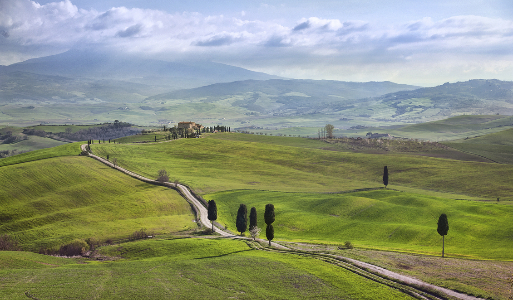
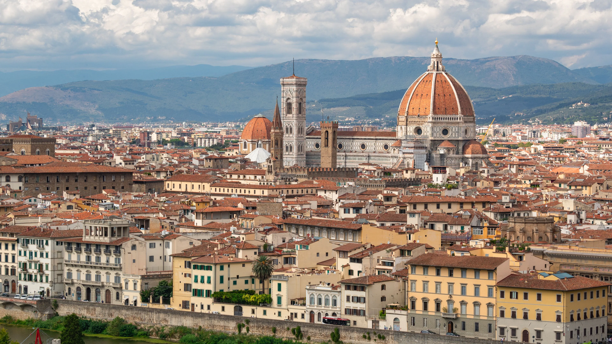
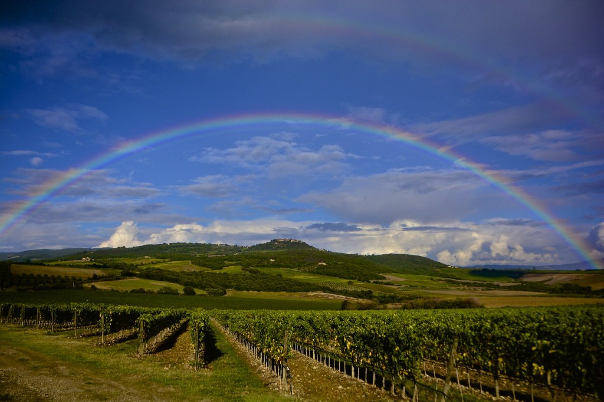
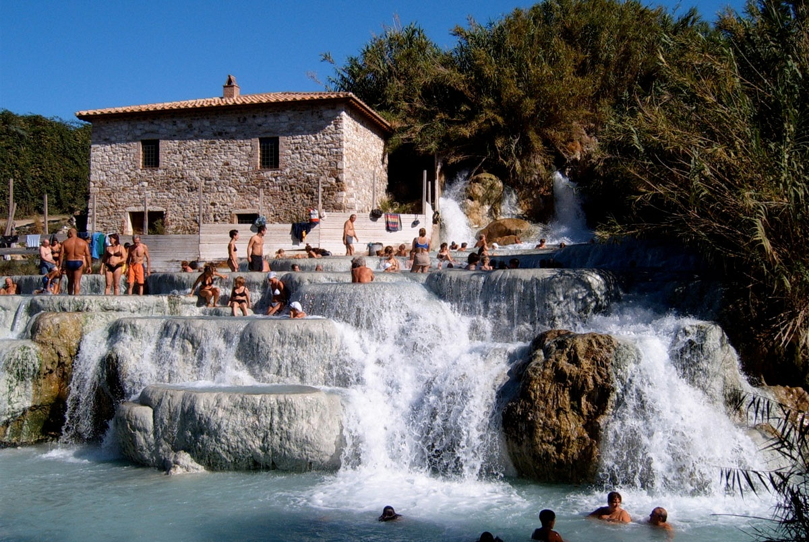

推荐 · 直接按这个查房
Florence 2晚＋乡间3晚
只换一次酒店
9月22–24日 Florence，24–27日 Val d’Orcia。城市段住中心，乡间段住带 spa / pool 的完整 resort。
- 城市一天半，重游＋初访都舒服
- 乡间两个完整白天，不跑远线
- 代价用掉原本9月22日的Torreglia恢复日

9月22–27日 · 5晚 · Florence 2＋Val d’Orcia 3
有人是带着喜欢重游，也有人是第一次认真认识这座城。两晚给 Florence，一天半不赶馆；之后三晚住进 Val d’Orcia，四位成人既能一起吃饭，也能各自享受乡间、Brunello 和 spa。
把原来的“Val d’Orcia四晚、Florence可有可无”改成 Florence两晚＋Val d’Orcia三晚。9月22日进 Florence，24日上午离开；乡间只换一次酒店。小众酒店不再做主方案，以库存更多的成熟酒店为先。
两晚等于抵达后的半天、一个完整白天和离开前的早晨。初访者能看到一个真正值得的艺术重点，重访者也不用再走一份景点清单；9月24日以后还有三个乡间夜晚，城市与自然都有完整体验。


现在不是在 Florence 和乡间之间二选一，而是让两段各自承担不同的体验。
只换一次酒店
9月22–24日 Florence，24–27日 Val d’Orcia。城市段住中心，乡间段住带 spa / pool 的完整 resort。
其余时间允许分开
Uffizi 和 Accademia 只选一个。午餐后可以分成艺术、逛店咖啡和酒店休息三种节奏，晚餐再会合。
Pienza一天，Montalcino一天
三晚不再加 Siena、San Gimignano 或 Saturnia。每天15:30左右回酒店，才值得选一个带spa和餐厅的基地。
一次比较两间同级房的总价、取消条款和停车方案；优先选择房量更大、服务成熟的酒店。
Santa Maria Novella · rooftop pool
位置、成熟服务与可订性最平衡。靠近火车站但仍在老城步行范围，9月屋顶泳池可作为下午休息点，并可安排合作车库valet。
设计感 · 自带garage
没有传统五星的仪式感，但房量最大、公共空间活泼而且酒店有车库。两间房更容易放在同一预订里，也适合把预算留给家庭晚餐和乡间resort。
私人花园 · pool · spa
它与St. Regis不是同一种体验。只有两间房总价可以接受、并愿意留半天下午让全家分别享受花园与泳池时才选；否则Minerva更合理。
三家都是完整酒店或resort，四个人可以选择不同活动再回酒店会合，不让十几间房的小农庄决定整段行程能否成立。

首选 · 90间房Montepulciano · 5-star resort
有多种客房、套房与villa，三个室外泳池和室内spa。位置偏Montepulciano，去Montalcino更远，但临近出发时通常比小农庄更容易组合出房。
Montalcino · thermal castle
45间套房、三家餐厅、自有温泉与酒庄，离Montalcino约8公里。价格更高，但比超小型boutique更适合现在直接查库存。
Florence不赶馆，Val d’Orcia不赶镇；每天一个全家共同重点，下午允许分组，晚餐重新会合。
10:00左右出发，13:00前后到酒店并把车交给酒店/车库。下午Oltrarno散步、咖啡和aperitivo，晚上吃一顿真正想吃的Florentine dinner。
上午Uffizi或Accademia二选一；12:30全家长午餐。下午可分成逛店咖啡、继续艺术或回酒店三组，傍晚再会合去Arno或rooftop。
早餐后取车，11:00前离开。途中午餐，15:00左右入住ADLER或备选resort；下午只泡温泉、散步和酒店晚餐。
上午Pienza、买pecorino；午餐后走经典景观路，15:30左右回酒店。若累，只做Pienza和一顿长午餐。
上午镇上咖啡，12:30长午餐，15:30做一场约90分钟品鉴；不加第二家。若不想喝，直接改成完整spa日。
10:00退房，路上选一家简单午餐；16:00前后回 villa。晚上不再安排正式行程。
Colli Euganei 已经会喝一次，所以 Tuscany 只需要一个真正有区别的 Brunello 体验；不想品酒的人可以留在镇上或酒店。
小型家族酒庄，由 winemaker 亲自带约90分钟，试三款以上，€40 / 人。需要提前联系，适合不想商业化的家庭小组；预订时说明实际参加品鉴的人数。
Florence住宿核对自 Grand Hotel Minerva、25hours 与 Four Seasons；乡间住宿核对自 ADLER Thermae、Precise Tale 与 Castello di Velona；酒庄与晚餐核对自 San Polino 与 Il Rigo。